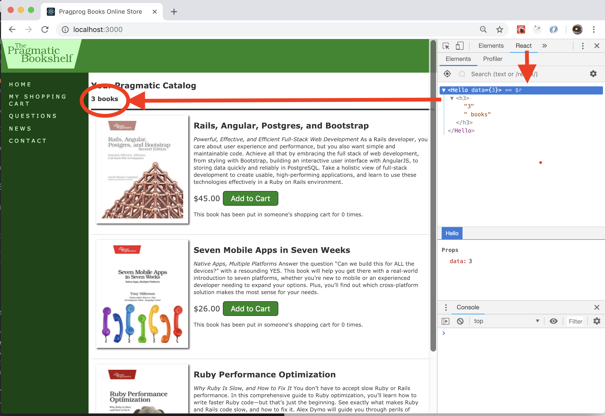

This project continues the development of “Depot” with Rails and ReactJS. After working on the the backend of the application a little bit further, we will also start to build a new version of the catalog page as a Single Page Application (SPA) where book listing, sorting, filtering, and searching are all implemented as ReactJS Components in one Web page.
Later, components for rendering shopping cart and even capturing an order are all going to be included on this SPA page, where techniques such as React Router has to be used.
GIT ALERT: For this entire project, you must strictly follow the "Git work flow" on page 14 of the "Git Crash Course"!
Complete all the steps EXCEPT those ones pertaining to testing in Task D.
One bug has to be fixed though.
ensure_not_referenced_by_any_line_item method that you added to the Product model, the flash notice still says "Product was successfully destroyed.". That is not right so fix this bug.To clear and then repopulate all your database tables (if you need to), run the command
rails db:resetthenrails db:seed.
On the side bar, add a new quick-link “My Shopping Cart” that links to the current Shopping Cart page. Correspondingly, add a “Back to Catalog” link at the end of the Shopping Cart page so you can go back.
Complete the "Playtime” tasks on page 132 at the end of Task D. Please display the counter message only after the user has visited the catalog page more than 5 times without putting any book in his/her shopping cart.
flash and pluralize, very useful when implementing this feature. Google them!Popularity-based sorting
Add an additional popularity field in the products table so as to keep track of how many times such a book has been put in someone(anyone)’s shopping cart. Obviously, the larger is such a field, the more popular is that book. The books on the catalog page then need to be sorted based on their popularity by default.
Warning: This part tests your understanding of MVC in Rails that you've learned so far. See some hints in section 2.2 below.
The following command creates a migrate file that will add one new decimal field popularity to the table products:
rails g migration add_popularity_to_product popularity:decimalIn the migrate file generated by the command above, add , default: 0 at the end of the line of add_column. Then of course you need to rake this migrate to actually update the database table. Note, if for some reason, the rails db:migrate command fails, all you need to do is rollback and re-rake the migrate. The worst-case scenario is that you have to delete the entire database db/development.sqlite3 all together and re-rake all migrates from the beginning.
In order to update the popularity of a product in the products table, you will find that the update_attribute() method comes in handy. For instance, assume you have a variable product whose popularity attribute needs to be increased by 1, you may do the following:
product.popularity = product.popularity + 1
product.update_attribute(:popularity, product.popularity)Also, when you test your code, chances are you will mess up some of the database tables. When that happens and you need to bring the tables back to sanity (e.g. you need to reset the quantity of a lineitem to 0), you will find the DB Browser for SQLite tool an invaluable tool to have.
In this part, we're going to learn how to integrate ReactJS into an existing Rails app.
React is known as a JavaScript framework that
Out of many online tutorials on React, Redux, and related subjects, the official API documentation site turns out to be the best.
A sidenote:
In this past fall (fall 2018), I taught CS 4990 "Special Topics in CS" as a pilot course covering FullStack Web Development on React, Redux, MongoDB, Express, NodeJS, and more. In this coming fall, I am going to offer CS 4840, a dedicated course on modern and advanced web development technologies. Welcome to sign up.
Add the following line to Gemfile:
gem 'webpacker'Run the following commands to install React and all the dependencies, change configuration files, and create a new app/javascript/packs directory from where Webpack will compile any Javascript or CSS, including React components.
bundle install
rails webpacker:install
rails webpacker:install:reactRemove the following line from app/assets/javascripts/application.js:
//= require turbolinksUpdate the following line in config/environments/development.rb:
config.webpacker.check_yarn_integrity = falseRestart the Rails server
Let's give it a quick test.
Update the following two files such that on the top of the catalog page, the number of products is rendered by React (as shown in the screenshot below).
app/views/store/index.html.erb (the Rails view file for displaying the catalog page)app/javascript/packs/hello_react.jsx (the toy component automatically created by the last command rails webpacker:install:react that you ran above.
Warning: You can't proceed to the next section without completing this one.
As you learned in Project 1, Rails 5.1+ comes with the fantastic webpack-dev-server which allows "hot-reloading", i.e., it will analyse changes in our app/javascript folder and rebuild the frontend on the fly.
Unfortunately, on AWS cloud 9, I am running out of time figuring out how to make "hot reloading" to work. So, if you are an AWS Cloud9 user, only run one server which is the Rails server. And when you need to test your React code, just refresh the browser.
Run the following command to install foreman, a tool that allows us to run two processes simultaneously: rails s you all know and love and webpack-dev-server.
gem install foremanUnder the root folder of the demo project, create a new file Procfile.dev and add the following two lines into it, one for starting the Rails server and the other for starting the webpack server:
web: bundle exec rails s
webpacker: ./bin/webpack-dev-serverFinally, start both Rails and webpack servers:
foreman start -f Procfile.dev -p 3000Test the application at localhost:3000 in the browser and use the React Developer Tools to check how wonderful hot-reloading is.
Git Alert
In the previous couple of sections, we used hello_react.jsx to ensure that our React-based frontend can be properly integrated with our Rails-based backend. Of course, you don't want to stick with this toy component for the rest of this app. So let's clear the house before moving on:
Remove both application.js and hello_react.jsx files from the app/javascript/packs folder since we don't need either of them anymore.
Remove the content_tag that you added into app/views/store/index.html.erb. It was only there fore "instant gratification" so we don't need it either.
Okay, now, here is the plan: we are going to build two catalogs (same contents though) on two seprate pages - one Rails view-based producing regular HTML and Javascript (like what we did in Part I above and we are going to continue to work on it) and one ReactJS-baed SPA producing JSON. For now, the SPA version of the catalog will simply display the number of books in the catalog. It apparently will be enriched in the next Tasks.
Of course, on the frontend of a real-world app, you don't need two versions for the same web page. We are building
Depothere as a training project and that is why I want to expose you to both.
So, let's do this.
In app/views/layouts/application.erb, replace the "Home" quick link with the following:
<li><%= link_to "Home", store_index_path(spa: false) %></li>
<li><%= link_to "Home (SPA)", store_index_path(spa: true) %></li>As you can see, the HTML request sent from both of these two quick links are going to be handled by the same method in the same controller (i.e. store#index), however, the parameter spa that they carry is different, one false and one true. Then in store#index, different view files will be rendered accordingly. See below.
At the end of the index method in app/controllers/store_controller.rb, add the following block:
...
respond_to do |format|
format.html {
if (params[:spa] && params[:spa] == "true")
render 'index_spa'
# the else case below is by default
else
render 'index'
end
}
format.json {render json: @products}
end
...Another very important change to the StoreController above is the format.json {render json: @products} statement. Such a statement sends back all the books on the catalog in the form of JSON to the client (which is going to be a React-based SPA) upon receiving an ajaxified request from it. More discussions on this later.
Next, create a new view file index_spa.html.erb (see below) in the folder of app/views/store.
<% if notice %>
<aside id="notice"><%= notice %></aside>
<% end %>
<%= content_tag :div,
id: "catalog" do %>
<%= javascript_pack_tag 'catalog' %>
<% end %>Such a file serves as the entry point to the React Components (in this case, Catalog). Notice that unlike what we did in the Hello component above, we are not passing books as React props to Catalog, instead, the component will fetch them "asynchronously". More discussions on this later.
Switching to the React world now.
Run the following command to install axios - a React Promise based HTTP communication client for the browser and node.js.
yarn add axiosNext, let's organize the folder structure in the app/javascript folder like what we did in Project 1:
Then compose the following three files:
app/javascript/packs/catalog.jsx:
import "catalog"; // This imnplies to use app/javascript/catalog/index.js
app/javascript/catalog/index.js:
import React from "react";
import ReactDOM from "react-dom";
import Catalog from "./components/Catalog";
document.addEventListener("DOMContentLoaded", () => {
const catalog = document.querySelector("#catalog");
ReactDOM.render(<Catalog />, catalog);
});
app/javascript/catalog/components/Catalog.jsx:
import React from 'react';
import axios from 'axios';
export default class Catalog extends React.Component {
state = { books: [] };
componentDidMount = () => {
var self = this;
axios.defaults.headers.common['X-Requested-With'] = "XMLHttpRequest";
axios.get('/')
.then(function (response) {
console.log(response.data);
self.setState({ books: response.data })
})
.catch(function (error) {
console.log(error);
});
};
render = () => {
return(
<div>
<h3>
There are {this.state.books.length} books in the catalog.
</h3>
</div>
);
};
} Here is what is going to happen:
Using axios (see above), the Catalog component sends a special "Ajaxified" HTTP request to the server without block-waiting for the response to come back. Upon receiving such a request, the Rails server collects the data and sends it back as a "json" message (see the line format.json {render json: @products} in app/controllers/store_controller.rb). When such a "json" message arrives at the client, a callback function (technically, it is called a JavaScript Promise) will be called to handle it -- basically, populating the books state in Catalog and rendering it in the browser.
Restart the servers by running foreman start -f Procfile.dev -p 3000. Check out the Depot app on your browser.
If you look close to the Chrome Dev Tools, you should notice that we've already fetched all the books themselves (not just the number of them) back from the server and store them in the React state
books.But I think we've done quite a lot in this project and would like to call it.
Git alert
First, remove the alias heroku that you made in project 2.
git remote rm herokuThen the steps it takes to deploy your Depot application to Heroku are all the same as what you did in section 3.3. of Project 2 except that the name of your app on Heroku should be project3-yourfirstname-yourlastname.
Final version of the project source code pushed onto Github
Alert: Don't push your P3 to the master branch onto your Github repository until I explicitly tell you so on BlazeVIEW. I need to pull your Project 2 down for grading purposes first before you overwrite it with the code for this Project 3.
Final version of the project deployed on Heroku. You must name your application on Heroku:
http://project3-yourfirstname-yourlastname.herokuapp.comThe Git log file reflecting the full history of your project submitted on BlazeVIEW